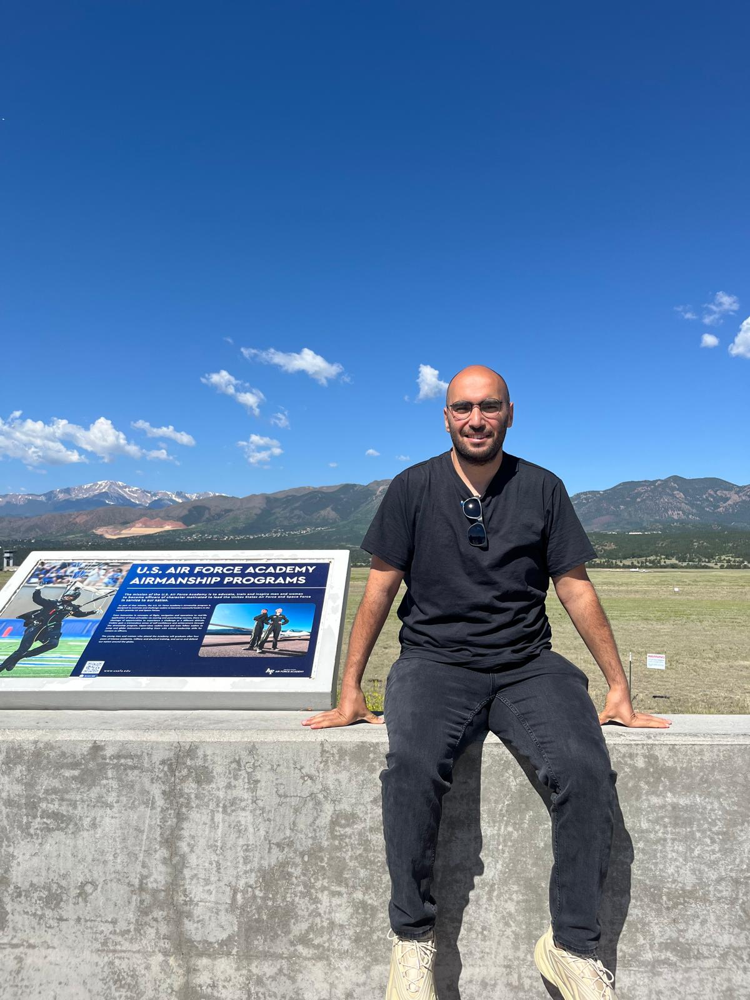

Welcome!

Hello! I am a researcher and currently an Assistant Professor, working on various aspects of wireless communication networks, with a special focus on non-terrestrial networks (NTN), sustainability, and artificial intelligence (AI) applications. Here, you can explore my most recent works and projects.
Announcements
• [16 July 2024] Metin Ozturk was interviewed by Cahid Atik from gdh digital, a large media outlet in Türkiye, about AI-related threats and opportunities, including those in 6G networks.
• [18 June 2024] Our paper, titled "Cell Switching in HAPS-Aided Networking: How the Obscurity of Traffic Loads Affects the Decision," was accepted for publication at IEEE Transactions on Vehicular Technology.
• [14 June 2024] Metin Ozturk was a panelist on the theme of "Non-Terrestrial Networks for Sustainable and Intelligent 6G Networks" at the panel session titled "Technologies That Will Revolutionize 6G" during the xURLLC6G Workshop at IEEE ICC 2024.
• [14 June 2024] Metin Ozturk chaired a session at the IEEE International Conference on Communications (ICC) 2024, during the Workshop on Ultra High Data Rate Enabled Next Generation Hyper-Reliable and Low-Latency Communications for Futuristic 6G Networks (xURLLC6G).
• [24 May 2024] Metin Ozturk delivered a talk, titled "Sustainability in Wireless Communications: Can HAPS Be Instrumental?," in a webinar organized and hosted by Dr. Abdulkadir Köse from Computer Engineering, Abdullah Gül University, Kayseri, Turkiye.
About
Hello!
I am a senior researcher on wireless communications. I received my Ph.D. degree from the James Watt School of Engineering, University of Glasgow, UK, and obtained my B.Sc. (in Electrical and Electronics Engineering) and M.Sc. (in Electronics and Communication Engineering) from Eskisehir Osmangazi University, Turkiye and Ankara Yildirim Beyazit University, Turkiye, in 2013 and 2016, respectively.
Currently, I’m working as a Visiting Professor/Post-Doctoral Fellow at Carleton University, Canada and an Assistant Professor of Telecommunications for Ankara Yıldırım Beyazıt University, Turkiye, where I previously worked as a Lecturer between 2020 and 2021, and as a Research Assistant between 2013 and 2016. My current research interest is sustainability in non-terrestrial networks (NTN)-assisted wireless communication networks.
I have authored/co-authored 40+ journal & conference papers as well as book chapters published at top-tier venues. Additionally, we have received Workshop Best Paper Award in IEEE WCNC 2019.
I have been serving as guest editor, research topic editor, and academic reviewer for various high-class journals and conferences. We have also organized a workshop at IEEE-WCNC 2023, titled "AI-Enabled Network Orchestration: Design Challenges and Opportunities for 6G Networks."
I have also delivered several seminars, talks, and keynote speeches that helped me share experience with people from distinctive backgrounds.
I am happily married and have one lovely kid.
Research

My research interests encompass various aspects of wireless networks, including:
- 6G and 5G networks
- Non-terrestrial networks (NTN)
- Artificial intelligence (AI) for communications
- Sustainability in wireless communication networks
- Cell-switching for energy efficiency in cellular communications
- Radio resource management
- High altitude platform station (HAPS) systems
Publications
Recent publications include:
- [Article] M. Ozturk et al., "Cell Switching in HAPS-Aided Networking: How the Obscurity of Traffic Loads Affects the Decision," IEEE Transactions on Vehicular Technology, 2024.
- [Conference Paper] M. Ozturk et al., "AI-Enabled Network Orchestration: Design Challenges and Opportunities for 6G Networks," IEEE WCNC Workshop, 2023.
- [Article] M. Ozturk et al., "Sustainable Non-Terrestrial Networks: Opportunities and Challenges," IEEE Communications Surveys & Tutorials, 2023.
Teaching
I have been involved in teaching various undergraduate and graduate courses, including:
- Wireless Communications
- Advanced Topics in Wireless Networks
- AI for Communications
- Radio Resource Management
- 6G Networks and Beyond
Talks & Seminars
Recent talks and seminars include:
- "Sustainability in Wireless Communications: Can HAPS Be Instrumental?" - Webinar hosted by Dr. Abdulkadir Köse, Abdullah Gül University, Turkiye, 2024.
- "Non-Terrestrial Networks for Sustainable and Intelligent 6G Networks" - Panelist at xURLLC6G Workshop, IEEE ICC 2024.
- "AI-Enabled Network Orchestration: Design Challenges and Opportunities for 6G Networks" - IEEE WCNC Workshop, 2023.